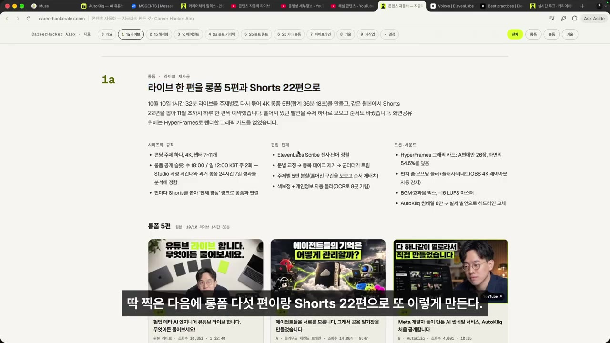
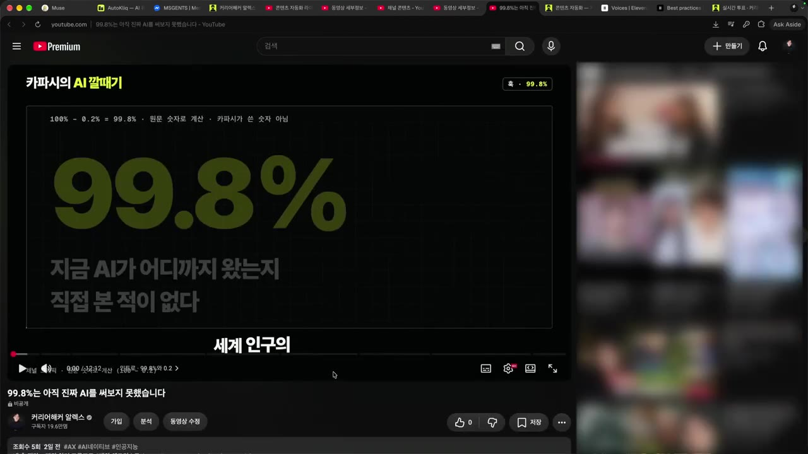
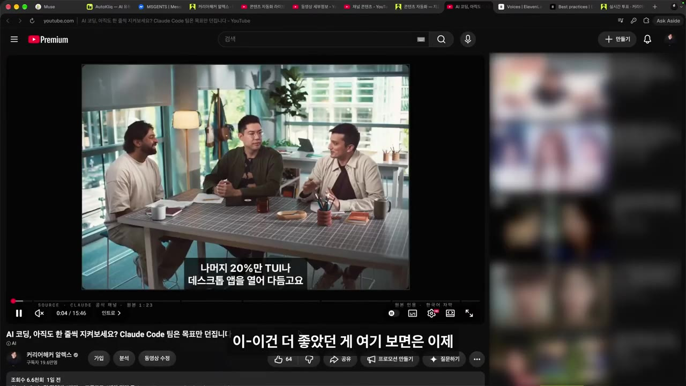
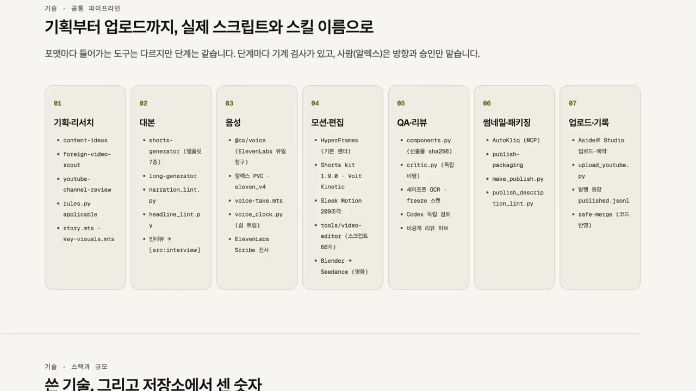
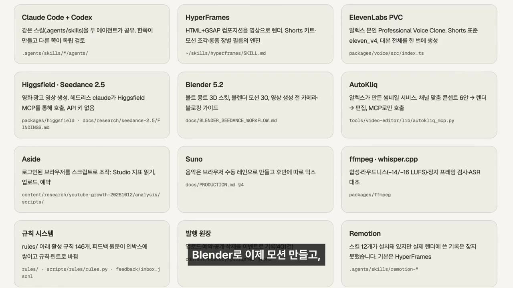
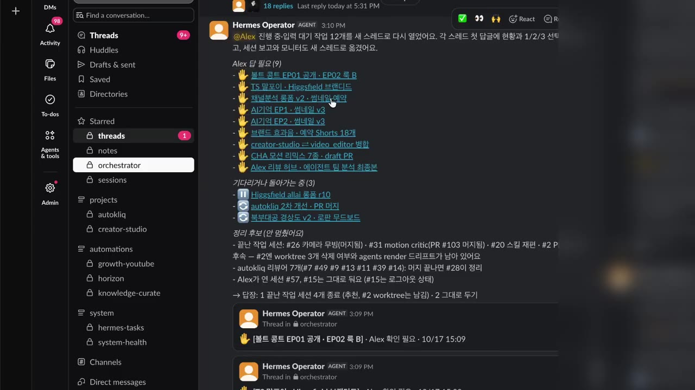
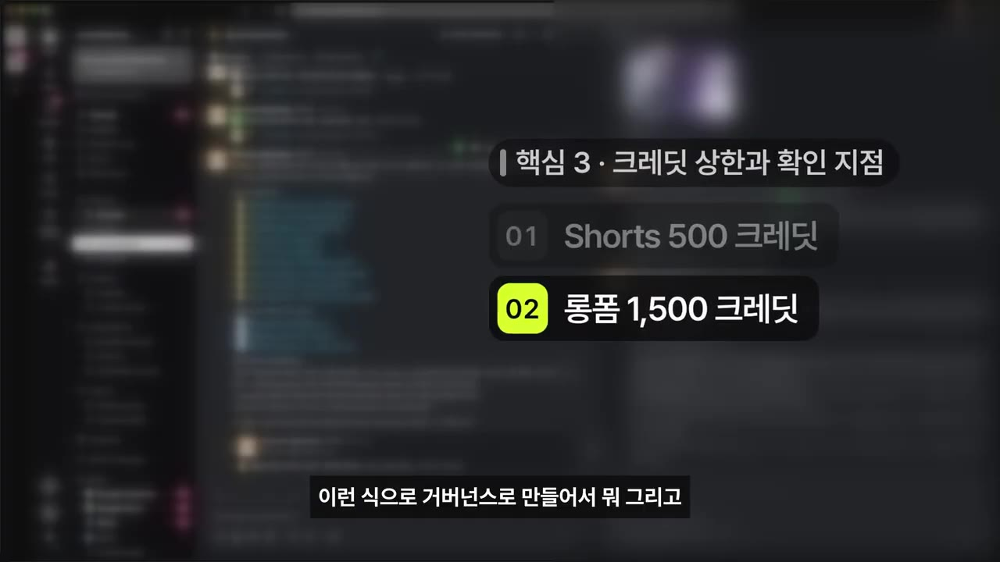

한눈에 보기
- 예전에는 영상 한 편에 30시간이 걸렸지만, 지금은 라이브 한 편을 Claude에게 통째로 넘기고 편수까지 맡겨 롱폼 5편과 Shorts 22편을 만들었다.
- 남의 인터뷰 영상, X 글, 좋아요 1위 댓글을 재료로 삼고, 거기에 Claude가 알렉스를 인터뷰해 얻은 답과 해석을 더해 2차 가공 영상을 만든다.
- 자동화의 핵심은 컷 편집, 모션 그래픽, 차트 규칙을 미리 '스킬'로 정리해 두는 것이다. 그래서 라이브만 던지면 알아서 편집된다.
- 파이프라인은 7단계다: 기획·리서치 → 대본 → 음성 → 모션·편집 → QA → 패키징 → 업로드.
- 사람이 병목이 되지 않도록 에이전트에게 권한은 최대한 주고, 크레딧 상한 같은 확인 지점만 정해 둔다(Human on the loop).
이런 분께 도움이 됩니다
- 영상 하나 만드는 데 시간이 너무 오래 걸려 업로드를 미루는 크리에이터
- 라이브·강의·회의 녹화를 여러 편의 콘텐츠로 다시 쓰고 싶은 사람
- AI 에이전트에게 일을 맡기되, 어디서 사람이 확인할지 정하고 싶은 사람
핵심 내용
결론: 이제 중요한 건 '재료'를 만드는 일
- 처음에는 컨셉, 주제, 대본, 리허설, 재촬영, 편집까지 영상 한 편에 약 30시간이 걸렸다.
- 지금은 라이브 녹화를 Claude에게 통째로 넘긴다. "5개 만들어"라고 하지도 않고 몇 편을 만들지도 Claude가 정한다. 롱폼마다 썸네일도 직접 만들게 시켰다. (0:00, 0:46)
- 결과: 라이브 1편으로 롱폼 5편, Shorts 22편이 나왔다(앞부분에서는 "숏폼 20개인가"라고 말함). 알렉스는 "퀄리티가 나쁘지 않다"고 평가했다.
- 알렉스는 휴대폰만으로 "롱폼으로 완성시켜 줘, 숏폼도 뽑아"라고 지시했고 결과물을 직접 손대지 않았다.

- 오히려 가공하지 않은 날것의 재료가 더 좋을 수 있다고 본다. 그래서 앞으로 라이브를 더 많이 할 계획이다. (4:48)
- 예전에는 '편집이 귀찮아 영상을 못 만드는' 딜레마가 있었다. 지금은 라이브를 하면서 "이건 쇼츠감, 이건 롱폼감" 하고 즐겁게 말한다.
💡 콘텐츠와 메시지만 있으면, 올릴 수준까지 가공하는 데는 거의 품이 들지 않는다.
2차 가공 ①: 남의 인터뷰 영상에 내 해석 더하기
- 사례: Cleo Abram(자막상 '클리오 아브라함')과 '알렉스완'(자막상 표기)이 Muse에 대해 나눈 인터뷰 영상. 이런 2차 가공 롱폼을 4편 만들었다.
- 번역과 자막만 다는 방법도 있고 실제로 그렇게 하는 사람도 많다. 하지만 알렉스는 자기 말로 풀어 주는 편이 더 도움이 된다고 판단했다.
- 원본 시청
- Claude에 넘기기
- 나를 인터뷰
- 말로 답하기
- 롱폼 제작
- 결과는 조회수 26,000회. 그런데 분석해 보니 알렉스가 말하는 구간에서 시청자가 빠져나갔다. 그래서 그 구간을 더 잘 만들어야 한다는 피드백을 얻었다. (3:34)
- 번역기를 돌리고 자막을 다는 '대박 자동화'는 누구나 할 수 있다. 알렉스는 메타 엔지니어이자 AI 서비스·에이전트 메모리를 만드는 사람으로서의 색깔, 쉬운 설명, 목소리를 얹어야 차별성이 생긴다고 말한다.
💡 차별점은 자동화 자체가 아니라 그 위에 얹는 '내 해석과 목소리'에서 나온다.
2차 가공 ②: X 글을 해설 영상으로
- 사례: 안드레이 카파시(Andrej Karpathy)가 X에 쓴 "99.8%의 사람은 아직 진짜 AI를 써 보지 못했다". 이 글을 분석하고 알렉스의 의견을 더해 영상으로 만들었다. (3:49)
- 이런 영상에서는 목소리보다 글을 어떻게 시각적으로 풀어내는지가 더 중요하다고 본다. 인포그래픽, 차트, 모션 그래픽을 많이 썼다.

2차 가공 ③: 좋아요 1위 댓글로 만든 후속 영상
- Claude Code 팀 엔지니어들이 일하는 방식을 다룬 영상이 있었다. 그 영상의 좋아요 1위 댓글(503개)은 "말 말고 보여 줘"였다. 프롬프트도, 에디터도, 코드도 안 나오는데 무슨 좋은 영상이냐는 불만이다. (6:56, 7:25)
- 그래서 "이분들이 에디터·코드·프롬프트를 보여 줬다면 어땠을까"를 직접 보여 주는 영상을 만들었다.
💡 댓글을 보고 만들면 원본보다 더 나은 콘텐츠가 나올 수 있다.

자동화의 핵심: 작업 규칙을 '스킬'로 만들어 두기
- 라이브 하나를 주면 Claude가 영상 편집과 모션 애니메이션까지 다 하느냐는 질문에 "그렇다"고 답했다. 모션 그래픽, 디자인 시스템, 차트를 모두 스킬로 다듬어 두었기 때문이다. (8:02)
- 컷 편집도 스킬로 만들었다. 컷 편집은 기계적으로 하면 안 된다. 목소리와 자막을 보고, 녹화 중에 "아, 이건 잘라 줘"라고 말한 부분을 LLM이 판단해 잘라야 한다.
- 모션 그래픽 디자인 스킬은 '볼트 키네틱'(자막상 표기)이라는 이름으로 만들었다. 여기에 아래 규칙을 적어 두었다. (8:58)
- 텍스트를 렌더링하는 방법
- 어떤 텍스트가 어디에 가야 하고, 어디에는 가면 안 되는지
- 차트를 넣는 조건
- 한 영상에 넣을 모션 그래픽 개수
💡 "라이브만 던지면 알아서 되는" 이유는 규칙을 미리 써 둔 스킬에 있다.
콘텐츠 자동화 파이프라인 (Shorts·롱폼 공통)
- 기획·리서치
- 대본
- 음성
- 모션·편집
- QA
- 패키징
- 업로드
- 1기획·리서치
사람들이 관심을 갖고 열광하는 주제와 포맷을 리서치시킨다 (9:10)
- 벤치마킹은 하되 남의 것을 그대로 베끼지 않는다. 포맷과 스타일만 살리고 내 색깔과 의견을 입힌다
- 2대본
큰 틀과 스토리보드를 짜고, 알렉스의 말투를 많이 가져오게 한다 (9:44)
- Shorts는 대본이 나쁘면 살아남기 어렵다
- 3음성
자기 목소리를 쓴다. 그것만으로 차별점이 생긴다
- 4모션·편집
HyperFrame(HTML 코드로 화면을 만들어 영상으로 바꾸는 스킬)을 쓴다. 영화 같은 장면은 Blender로 결과가 매번 같게(deterministic) 만들어 실수를 줄인다 (10:24)
- 알렉스 기억으로는 HyperFrame은 'Heizen'(자막상 표기) 회사가 만든 스킬이다
- 5QA
Claude가 만들면 Codex가, Codex가 만들면 Claude가 검증하는 독립 검토
- 6패키징
썸네일과 제목. 이것이 가장 중요할 때도 있다. 알렉스가 썸네일 사업을 하는 이유다
- 7업로드
'어사이드'(자막상 불분명)로 업로드한다
- 이 파이프라인 화면을 스크린샷으로 찍어 Claude에게 "나도 이거 할 수 있을까?"라고 물어보라고 권한다. 거의 해 줄 가능성이 높지만 디테일이 중요하다고 덧붙였다.

쓰는 도구
| 도구(자막 표기 기준) | 용도 |
|---|---|
| Claude Code, Codex | 작업 실행, 서로 교차 검증 |
| HyperFrame | HTML 코딩으로 모션 화면을 만들어 영상화 |
| 11랩스(ElevenLabs) | 용도는 자막상 불분명(음성 단계로 추정) |
| 힉스필드(Higgsfield) C-Dance | 영상 생성 (C-Dance는 자막상 표기) |
| Blender | 모션 제작 |
| 오토클릭(자막상 불분명) | 썸네일 제작 |
| 어사이드(자막상 불분명) | 업로드 |
| 순어(자막상 불분명) | 배경음악 |
| FM 팩(자막상 불분명) | 비디오 편집 |
| 규칙 시스템 | 하네스(에이전트 작업 규칙 틀) 관리 |
| 발행 원장 | 업로드 이벤트 기록 |
| 리모션(Remotion) | HyperFrame과 비슷한 렌더링 도구 |

사람이 병목이 되지 않게: Human on the loop
- 알렉스는 Shorts 5개, 롱폼 3개, 모션 그래픽 교체, 웹사이트 수정, 하네스 변경을 동시에 돌린다. 그러다 보니 승인을 기다리며 '손 든' 작업이 쌓이고, 알렉스 자신이 병목(bottleneck)이 되었다. (12:23)
- 깨달은 점: 이래서는 규모를 키울 수 없다. 그래서 피드백을 한 번 줄 때마다 그것을 스킬, 룰, 하네스로 만들어 승인 요청을 최소화한다.

- 원칙은 에이전트에게 권한을 최대한 주고, 막아야 할 지점만 정확하게 설계(governance)하는 것이다. (13:19)
- Higgsfield를 최대 설정으로 돌리면 크레딧이 한 번에 다 날아간다. 그래서 상한을 Shorts 1편 500, 롱폼 1,500 크레딧으로 정했다.

- 캐릭터를 생성한 뒤에는 영상을 만들기 전에 반드시 알렉스의 확인을 받게 했다.
- 이런 규칙을 정한 뒤에는 "내가 끼어들어 네 일을 멈추는 일이 없게 설계해 줘"라고 지시한다.
- 자막에는 'Human Under Loop'으로 들리지만, 설명란 표기는 'Human on the loop'이다.
💡 내가 없어도 굴러가야 시스템이다. 확인 지점은 꼭 필요한 곳에만 둔다.
정리
- 알렉스가 롱폼 자동화로 해 본 것은 세 가지다. (14:11)
- 라이브 1편을 롱폼 5편과 Shorts 22편으로 만들기
- 남의 롱폼과 X 글을 내 해석으로 다시 풀어 2차 가공하기
- 논문을 읽고 내 스타일과 내 목소리로 강의 만들기 (자막이 여기서 끝나 세부 내용은 없음)
따라 해보기
준비물
- Claude. 채팅으로 기획하는 단계까지는 일반 Claude로 충분하다. 실제 편집 자동화는 알렉스처럼 Claude Code를 쓴다.
- 재료: 라이브·강의·회의 녹화의 자막, 2차 가공할 원본 영상의 자막이나 X 글, 원본 영상의 댓글과 좋아요 수
- 비용·소요 시간: 영상에 나오지 않는다. 영상 생성(Higgsfield 등)과 음성 도구는 유료 크레딧을 쓴다(보충).
단계별 방법
- 라이브 통째로 넘기기
- 해석 인터뷰 받기
- 댓글로 후속 기획
- 작업 규칙 스킬화
- 파이프라인 점검
- 개입 지점 정하기
- 1라이브 통째로 넘기기
녹화 자막 전체를 붙여 넣고, 몇 편을 만들지도 Claude가 판단하게 한다. 아래 '1단계 입력'을 쓴다
- 2해석 인터뷰 받기
원본 영상 자막을 주고 Claude에게 질문 8개로 나를 인터뷰하게 한다. 한 번에 한 질문씩 말하듯 답한다. 아래 '2단계 입력'
- 3댓글로 후속 기획
원본 영상의 댓글과 좋아요 수를 주고, 상위 요청 3개에 답하는 기획안을 받는다. 아래 '3단계 입력'
- 4작업 규칙 스킬화
매번 같은 형식으로 만드는 콘텐츠의 규칙을 SKILL.md 초안으로 정리한다. 아래 '4단계 입력'
- 5파이프라인 점검
영상의 파이프라인 화면(9:16 부근)을 캡처해 첨부하고, 이번 주에 자동화할 2단계를 고르게 한다. 아래 '5단계 입력'
- 6개입 지점 정하기
크레딧 상한(알렉스는 Shorts 500, 롱폼 1,500)과 반드시 확인받을 시점(예: 캐릭터 생성 후)을 규칙으로 적는다
- 설명란의 실습 프롬프트 7은 입력에서 잘려 원문이 없다
1단계 입력 (설명란 실습 프롬프트 1)
아래는 제가 진행한 ○○ 라이브(또는 강의·회의 녹화)의 전체 자막입니다. 이 자막만으로 따로 볼 만한 롱폼과 Shorts를 몇 편 만들 수 있는지 직접 판단해 주세요. 편마다 ① 제목 ② 원본 구간(시작–끝 시각) ③ 첫 문장 ④ 시청자가 얻는 것 한 줄을 표로 정리하고, 같은 이야기가 두 편에 겹치지 않게 해 주세요. 완료 기준: 모든 구간이 자막의 실제 시각과 맞고, 각 편이 앞뒤 맥락 없이도 이해됩니다. [자막 붙여넣기: ○○]
2단계 입력 (실습 프롬프트 2)
아래는 ○○ 영상의 자막입니다. 저는 이 영상을 그대로 번역하지 않고, 제 해석을 담은 해설 영상을 만들려고 합니다. 이 영상을 본 시청자가 가장 궁금해할 질문 8개를 뽑아 저를 인터뷰해 주세요. 한 번에 한 질문만 묻고, 제 답을 들은 뒤 다음 질문으로 넘어가 주세요. 인터뷰가 끝나면 제 답만으로 10분 롱폼 개요(도입·본론 세 부분·마무리)를 써 주세요. 완료 기준: 원본의 주장과 제 의견이 구분되어 있고, 원본을 그대로 옮긴 문장이 없습니다. [자막 붙여넣기: ○○]
3단계 입력 (실습 프롬프트 4)
아래는 ○○ 영상에 달린 댓글과 좋아요 수입니다. 좋아요가 많은 요청이나 불만 3개를 골라, 그 요청에 답하는 후속 영상 기획안을 만들어 주세요. 기획안마다 ① 어떤 댓글에 답하는지(작성자 이름은 빼고) ② 영상에서 직접 보여 줄 것(화면·코드·프롬프트 등) ③ 첫 문장 ④ 10분 구성. 완료 기준: 각 기획이 댓글의 요청을 말이 아니라 화면으로 보여 주며 해결합니다. [댓글 붙여넣기: ○○]
4단계 입력 (실습 프롬프트 5)
제가 매번 같은 형식으로 만드는 ○○(영상·글 종류)의 작업 규칙을 Claude 스킬 문서(SKILL.md) 초안으로 정리하고 싶습니다. 아래 예시 ○○편과 제 메모를 보고 ① 자르는 것과 남기는 것 ② 텍스트·자막을 어디에 두고 어디엔 두지 않는지 ③ 차트·그래픽을 넣는 조건과 한 편당 개수 ④ 끝내기 전 검사 목록을 SKILL.md 형식으로 써 주세요. 파일을 만들거나 실행하지 말고 글로만 보여 주세요. 완료 기준: 다른 사람이 이 문서만 보고도 같은 형식으로 만들 수 있습니다. [예시·메모 붙여넣기: ○○]
5단계 입력 (실습 프롬프트 6, 파이프라인 화면 스크린샷 첨부)
이 화면은 한 크리에이터의 콘텐츠 자동화 단계(기획·리서치 → 대본 → 음성 → 모션·편집 → QA → 썸네일·패키징 → 업로드)입니다. 저는 ○○ 주제로 ○○(롱폼/Shorts)를 만들고, 지금 쓰는 도구는 ○○입니다. 제가 이걸 할 수 있을지 판단해 주고, 이번 주에 바로 자동화할 단계 2개를 골라 단계별로 필요한 도구·입력·결과물·사람이 확인할 지점을 표로 정리해 주세요. 계정 연결·업로드·결제는 하지 말고 계획만 세워 주세요. 완료 기준: 표의 각 줄을 제가 오늘 바로 시작할 수 있습니다.
따라 할 수 있는지 점검
- ✅ 바로 따라 할 수 있음: 1~3단계와 5단계. 프롬프트 원문이 있어 Claude 채팅에 자막·댓글·스크린샷만 붙이면 된다.
- ⚠️ 4단계 「작업 규칙 스킬화」: 프롬프트는 SKILL.md 초안까지만 만든다. 이 문서를 Claude Code에 스킬로 등록하는 방법은 영상에 없다 → Claude Code 공식 문서에서 'skills'를 검색해 등록 방법을 확인한다(보충). 알렉스의 실제 스킬 파일(볼트 키네틱 등)은 공개되지 않았다.
- ⚠️ 영상 완성 단계(컷 편집, 음성, 모션, 렌더, 업로드): 이 노트의 단계는 기획과 계획까지다. HyperFrame, Higgsfield, 음성·업로드 도구의 설치·연결·설정법은 영상에 나오지 않는다 → 각 도구의 공식 사이트에서 설치 방법과 요금제를 확인한다. Higgsfield 등은 유료 크레딧이 필요하다.
- ⚠️ 6단계 「개입 지점 정하기」: 실습 프롬프트 7의 원문이 입력에서 잘려 있다 → 영상 설명란에서 원문을 확인한다. 크레딧 상한 500/1,500은 알렉스의 값이므로 내 요금제에 맞게 정해야 한다.
- ⚠️ 썸네일 자동 생성: 알렉스는 자기가 만드는 썸네일 서비스를 쓴다. 그 서비스 이름은 자막상 불분명하다('오토클릭').
- ❓ 숏폼 편수가 앞부분에서는 "20개인가", 뒷부분과 설명란에서는 22편이다. 업로드·음악·편집 도구 이름 일부('어사이드', '순어', 'FM 팩')는 받아쓰기 오류일 수 있으니 영상 11:28 화면에서 확인한다.
확인 방법
- 1단계: 표의 구간 시각이 원본 자막과 실제로 맞는지, 두 편에 같은 이야기가 겹치지 않는지 확인한다.
- 2단계: 롱폼 개요에서 원본 주장과 내 의견이 구분되어 있고, 원본을 그대로 옮긴 문장이 없는지 확인한다.
- 3단계: 각 기획안이 말이 아니라 화면(코드·프롬프트·에디터)으로 요청에 답하는지 확인한다.
- 4단계: 다른 사람이 SKILL.md만 보고 같은 형식을 만들 수 있는지 확인한다.
막히면
- 번역하고 자막만 달면 누구나 하는 콘텐츠가 된다. 내 해석과 목소리를 반드시 더한다.
- 내가 말하는 구간에서 이탈이 생겼던 사례가 있다. 해설 부분도 편집과 시각 자료로 보강한다.
- 벤치마킹할 때는 포맷과 스타일만 가져온다. 남의 영상을 그대로 베끼는 것은 실제로 문제가 되고 있다.
- 크레딧 상한 없이 영상 생성을 최대로 돌리면 크레딧이 한 번에 소진된다.
- 승인 요청이 쌓이면 내가 병목이 된다. 같은 피드백을 두 번 하게 되면 그 내용을 룰·스킬로 만든다.
기억할 숫자·인용
- 30시간: 처음 유튜브를 할 때 영상 한 편에 걸린 시간
- 라이브 1편 → 롱폼 5편 + Shorts 22편
- 남의 롱폼을 2차 가공한 영상 4편. 그중 하나가 조회수 26,000회
- "99.8%는 아직 진짜 AI를 써 보지 못했다": 안드레이 카파시의 X 글
- 503개: Claude Code 팀 영상의 좋아요 1위 댓글 "말 말고 보여 줘"
- 크레딧 상한: Shorts 1편 500, 롱폼 1,500 (Higgsfield)
- 동시 작업 예: Shorts 5개 + 롱폼 3개 + 모션 그래픽, 웹사이트, 하네스 수정
- "이제 중요한 거는 재료를 만드는 일밖에 없다."
- "제가 없이도 굴러가야 시스템이 돌아가잖아요."
생각해볼 점
- 영상의 주장: 롱폼 5편, Shorts 22편의 "퀄리티가 나쁘지 않다"는 것은 알렉스 본인의 평가다. 각 편의 조회수 같은 성과는 26,000회 사례 하나만 나왔다.
- 내 의견: 사람의 해석을 더하는 2차 가공이라도, 남의 영상 클립을 쓰려면 저작권과 공정 이용 범위를 따로 확인해야 한다. 영상에서는 이 부분을 다루지 않는다.
- 내 의견: "라이브만 던지면 된다"는 결과는 알렉스가 오랫동안 다듬은 스킬과 여러 유료 도구가 갖춰져 있어서 가능하다. 처음 하는 사람은 4단계(규칙 스킬화)에 가장 많은 시간을 들이게 될 것이다.
바로 해볼 일
- 최근 녹화(라이브·강의·회의) 자막 하나를 1단계 프롬프트로 Claude에 넣고, 몇 편이 나오는지 확인하기
- 내가 자주 받는 피드백이나 반복 작업 규칙 3가지를 메모해 4단계 프롬프트로 SKILL.md 초안 받아 보기
- 쓰고 있는 AI 도구마다 '자동 실행 한도(크레딧·비용)'와 '반드시 확인받을 시점'을 한 줄씩 정해 두기